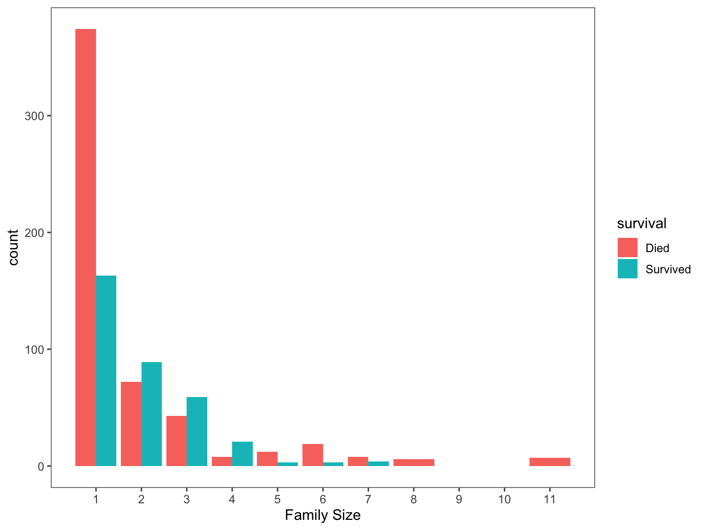
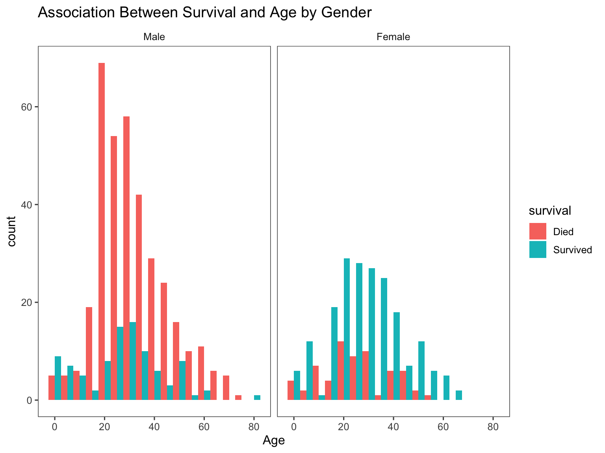
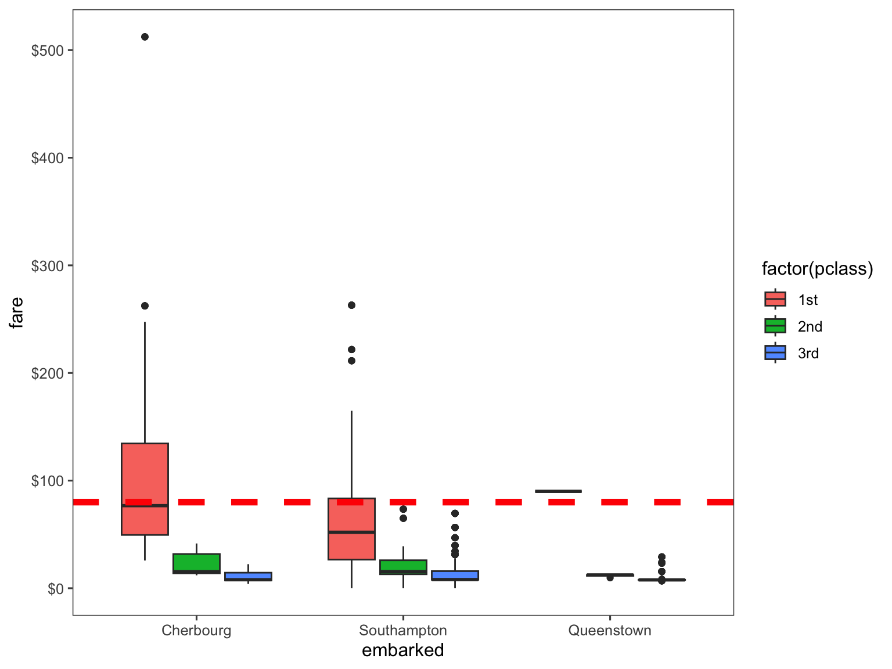
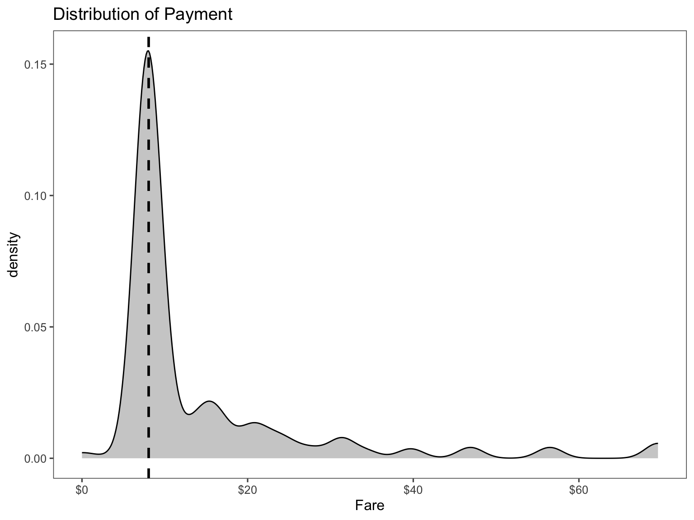
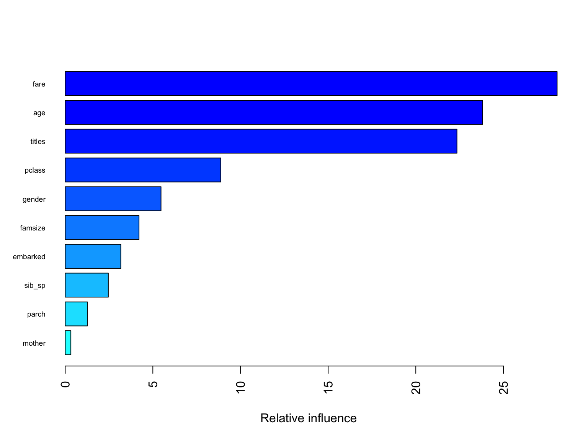
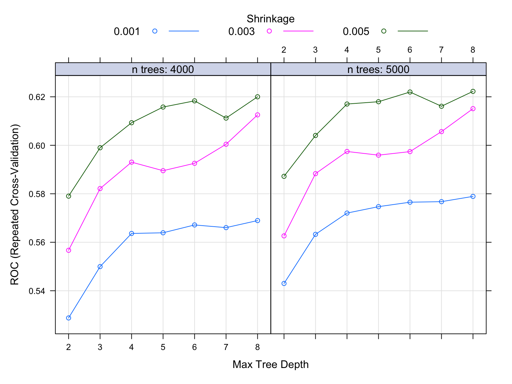

Titanic
Clement Mugenzi
12/18/2019
Introduction
This titanic project is based on the infamous sinking of Titanic in
1912, a tragedy that led to 1,502 people dying out of
2,224 passengers. Datasets provided include the train
dataset with 891 passengers whose survival fate is known
and a test dataset with 418 passengers whose survival fate
is unknown. I will first start by loading both datasets then combine
them to do some feature engineering then use machine learning tools to
predict what the survival fate for the passengers in the test dataset
would have been.
Loading the Dataset
# First, we will load the train dataset.
f_train =
read_csv("Data/train.csv") %>%
janitor::clean_names()
# Second, the test dataset is loaded
f_test =
read_csv("Data/test.csv") %>%
janitor::clean_names()
# Then both the train and test datasets are combined into a single dataset.
Titanic =
bind_rows(f_train, f_test) %>%
rename(gender = "sex")After loading and combining both datasets, it is better to highlight what kind of dataset I will be working with.
Some of the variables important to highlight include name, passengerID, gender, age, and each individual’s survival status.
Feature Engineering
Summary of missing values
The code chunk below summarises how many missing values we have per column.
Titanic %>%
gather(key = "key", value = "val") %>%
mutate(is.missing = is.na(val)) %>%
group_by(key, is.missing) %>%
summarise(num.missing = n()) %>%
filter(is.missing == T) %>%
dplyr::select(-is.missing) %>%
arrange(desc(num.missing)) %>%
rename("Missing Values" = "num.missing", "Variable" = "key") %>%
knitr::kable()## `summarise()` has grouped output by 'key'. You
## can override using the `.groups` argument.| Variable | Missing Values |
|---|---|
| cabin | 1014 |
| survived | 418 |
| age | 263 |
| embarked | 2 |
| fare | 1 |
We will not worry about the survived variable since all missing values correspond to the value we are trying to predict, which is the survival fate of persons in the test dataset.
Defining Factor Variables
The code chunk below converts appropriate variables to factor variables. With cabin having a total of multiple missing values, I will just replace all of them with letter U which stands for Unknown.
titanic =
Titanic %>%
rename(survival = survived) %>%
mutate(
gender = recode(gender, "male" = "Male", "female" = "Female"),
embarked = recode(embarked, "C" = "Cherbourg", "S" = "Southampton",
"Q" = "Queenstown"),
pclass = recode(pclass, "1" = "1st", "2" = "2nd", "3" = "3rd"),
survival = recode(survival, "0" = "Died", "1" = "Survived"),
cabin = replace_na(cabin, "U"),
gender = factor(gender, levels = c("Male", "Female")),
embarked = factor(embarked, levels = c("Cherbourg", "Southampton",
"Queenstown")),
survival = factor(survival, levels = c("Died", "Survived")),
pclass = factor(pclass, levels = c("1st", "2nd", "3rd")))This is a dirty dataset and we either need to drop the rows with NaN values or fill in the gaps by leveraging the data in the dataset to estimate what those values could have been. We will choose the latter and try to estimate those values and fill in the gaps rather than lose observations.
Creating a Family Variable
We all know that family usually have the same last name, therefore I will group families according to their last names to make it easier to create the family variable.
# Finally, grab surname from passenger name
titanic$lastname = sapply(titanic$name,
function(x) strsplit(x, split = '[,.]')[[1]][1])Since we have variables quantifying the number of family members
present for a particular passenger, I will use those to create a brand
new Family variable which can help us measure the
likelihood a passenger will survive given the amount of family members
they have on board with them (since family members usually have a
tendency to not leave their people behind).
# Creating a Family variable including the passenger themselves.
titanic$famsize = titanic$sib_sp + titanic$parch + 1
# Creating a Family variable
titanic$family = paste(titanic$lastname, titanic$famsize, sep = "_")Thus, using the above created Family variable, I can
visualize the association between family size and survival of a
passenger. Note that the largest family was composed of
11 people.
# Use ggplot2 to visualize the relationship between family size & survival
ggplot(titanic[1:891,], aes(x = famsize, fill = survival)) +
geom_bar(stat = 'count', position = 'dodge') +
scale_x_continuous(breaks = c(1:11)) +
labs(x = 'Family Size') +
theme_few()
And as expected, the larger the family gets the less likely an individual would have survived.
We can also visualize the relationship between Age and
Survival
# We'll look at the relationship between age & survival by gender.
ggplot(titanic[1:891,], aes(age, fill = survival)) +
geom_histogram(position = "dodge", binwidth = 5) +
facet_grid(~gender) +
labs(
title = "Association Between Survival and Age by Gender",
x = "Age") +
theme_few()
It is clear that the Female gender was likely to survive
especially for female aged between 20-40 years old. This can be due to a
lot of factors such as that mothers might have been more vulnerable, and
thus were more likely to be rescued along with their young ones. On the
male side, males in the 20-40 age group were more likely to
die compared to males in other age groups because these men might have
been involved in the rescuing other groups such as mothers, their kids,
and the elderly.
Cleaning Names
With the following code chunk, we will determine what different name titles we have and their distribution according to gender.
# I will extract titles from the name variable
titanic$titles = gsub('(.*, )|(\\..*)', '', titanic$name)
table(titanic$gender, titanic$titles) %>%
knitr::kable()| Capt | Col | Don | Dona | Dr | Jonkheer | Lady | Major | Master | Miss | Mlle | Mme | Mr | Mrs | Ms | Rev | Sir | the Countess | |
|---|---|---|---|---|---|---|---|---|---|---|---|---|---|---|---|---|---|---|
| Male | 1 | 4 | 1 | 0 | 7 | 1 | 0 | 2 | 61 | 0 | 0 | 0 | 757 | 0 | 0 | 8 | 1 | 0 |
| Female | 0 | 0 | 0 | 1 | 1 | 0 | 1 | 0 | 0 | 260 | 2 | 1 | 0 | 197 | 2 | 0 | 0 | 1 |
Let’s now define all these different name titles as rare titles (for those titles which are really rare).
Distribution of Titles by Gender
# Titles with very low cell counts to be combined to "rare" level
rare_title = c('Dona', 'Lady', 'the Countess','Capt', 'Col', 'Don',
'Dr', 'Major', 'Rev', 'Sir', 'Jonkheer')
# Also reassign mlle, ms, and mme accordingly
titanic =
titanic %>%
mutate(
titles = gsub('(.*, )|(\\..*)', '', titanic$name),
titles = str_replace(titles, "Mlle", "Miss"),
titles = str_replace(titles, "Ms", "Miss"),
titles = str_replace(titles, "Mme", "Mrs"),
titles = recode(titles, "Dona" = "Rare Title", "Lady" = "Rare Title",
"the Countess" = "Rare Title", "Capt" = "Rare Title",
"Col" = "Rare Title", "Don" = "Rare Title",
"Dr" = "Rare Title", "Major" = "Rare Title",
"Rev" = "Rare Title", "Sir" = "Rare Title",
"Jonkheer" = "Rare Title"))
titanic %>%
group_by(titles, gender) %>%
summarise(
Frequency = n()) %>%
pivot_wider(
names_from = titles,
values_from = Frequency) %>%
mutate(
Master = replace_na(Master, 0),
Miss = replace_na(Miss, 0),
Mr = replace_na(Mr, 0),
Mrs = replace_na(Mrs, 0)) %>%
knitr::kable()## `summarise()` has grouped output by 'titles'.
## You can override using the `.groups` argument.| gender | Master | Miss | Mr | Mrs | Rare Title |
|---|---|---|---|---|---|
| Male | 61 | 0 | 757 | 0 | 25 |
| Female | 0 | 264 | 0 | 198 | 4 |
titanic %>%
group_by(gender, pclass, titles) %>%
summarise(
median_age = median(age, na.rm = T)) %>%
knitr::kable()## `summarise()` has grouped output by 'gender',
## 'pclass'. You can override using the `.groups`
## argument.| gender | pclass | titles | median_age |
|---|---|---|---|
| Male | 1st | Master | 6.0 |
| Male | 1st | Mr | 41.5 |
| Male | 1st | Rare Title | 49.5 |
| Male | 2nd | Master | 2.0 |
| Male | 2nd | Mr | 30.0 |
| Male | 2nd | Rare Title | 41.5 |
| Male | 3rd | Master | 6.0 |
| Male | 3rd | Mr | 26.0 |
| Female | 1st | Miss | 30.0 |
| Female | 1st | Mrs | 45.0 |
| Female | 1st | Rare Title | 43.5 |
| Female | 2nd | Miss | 20.0 |
| Female | 2nd | Mrs | 30.5 |
| Female | 3rd | Miss | 18.0 |
| Female | 3rd | Mrs | 31.0 |
The table above gives us a short summary of how we should go about replacing all the missing age values. And as expected, those passengers with title name Master or Miss tend to be younger than those with title names Mrs or Mr. It also looks like there is an age variability among passenger class (Pclass) where older passengers tend to be in the more luxurious 1st class.
Creating a mother and status Variable
To make it more interesting, I am going to create a
mother variable to see whether being a mother or child is
associated with survival.
let us create the mother variable.
# Adding Mother variable
titanic$mother = 'Not Mother'
titanic$mother[
titanic$gender == 'Female' & titanic$parch > 0
& titanic$age > 18 & titanic$titles != 'Miss'] = 'Mother'
# Show counts
table(titanic$mother, titanic$survival)##
## Died Survived
## Mother 15 37
## Not Mother 534 305Now let us convert both variables created in factor variables
titanic =
titanic %>%
mutate(
mother = factor(mother, levels = c("Not Mother", "Mother")),
titles = factor(titles, levels = c("Mr", "Mrs", "Miss", "Master",
"Rare Title")))Missingness
The Age variable
There are 263 missing age values. We will use a technique of replacing the missing age values using a model that predicts age based on other variables. I will use the Multivariate Imputation by Chained Equations (Mice) package to predict what missing age values would have been based on other variables.
After running this mice model, I am worried that it might have compromised my original titanic dataset. So let use some visualization to see if nothing changed.
par(mfrow = c(1,2))
hist(titanic$age, freq = F, main = 'Age: Original Data',
col = 'darkgreen', ylim = c(0,0.04))
hist(tit_output$age, freq = F, main = 'Age: MICE Output',
col = 'lightgreen', ylim = c(0,0.04))Now that everything looks good, let us replace all the missing age values using the mice model I just built.
titanic$age = tit_output$age
sum(is.na(titanic$age))## [1] 0The Embarked variable
Here, I will just replace the 2 missing values based on on the amount of money they paid to embark (fare variable). We can easily visualize this by plotting the embarked, fare, and passenger class (Pclass) variables on the boxplot.
# Get rid of our missing passenger IDs
embark_fare = titanic %>%
filter(passenger_id != 62 & passenger_id != 830)
# Use ggplot2 to visualize embarkment, passenger class, & median fare
ggplot(embark_fare, aes(x = embarked, y = fare, fill = factor(pclass))) +
geom_boxplot() +
geom_hline(aes(yintercept = 80),
colour = "red", linetype = "dashed", lwd = 2) +
scale_y_continuous(labels = dollar_format()) +
theme_few()
Therefore, looking at the plot, we can safely conclude that both passengers embarked from the Cherbourg port, so I will replace both missing values with the corresponding port of embarkment.
titanic$embarked[c(62, 830)] = 'Cherbourg'
sum(is.na(titanic$embarked))## [1] 0The Fare variable
ggplot(titanic[titanic$pclass == "3rd" & titanic$embarked == "Southampton", ],
aes(x = fare)) +
geom_density(fill = "gray50", alpha = 0.4) +
geom_vline(aes(xintercept = median(fare, na.rm = T)),
colour = 'black', linetype = "dashed", lwd = 1) +
scale_x_continuous(labels = dollar_format()) +
labs(
title = "Distribution of Payment",
x = "Fare") +
theme_few()
Therefore, I will replace the missing value with the median of the 3rd passenger class.
titanic$fare[1044] =
median(titanic[titanic$pclass == "3rd" & titanic$embarked == "Southampton", ]$fare,
na.rm = TRUE)
sum(is.na(titanic$fare))## [1] 0After this step, the final Titanic dataset should be
cleaned without missing values and necessary variables for the
Prediction stage.
Splitting the Dataset for model building
I will split the Titanic dataset back to the
Train and Test datasets.
titanic = titanic %>%
dplyr::select(-c("name", "ticket", "family", "lastname", "cabin"))
# I thought of using caret but it is not possible in this situation due
# to missing values in the test dataset
# splitting the dataset
test_data = titanic[is.na(titanic$survival),]
train_data = na.omit(titanic)
# pull out the dependent variable
train_df = train_data[,-c(1,2)]
test_df = test_data[,-c(1,2)]Model Building
Logistic Model
I can also fit a logistic regression using caret. This is to compare the cross-validation performance with other models, rather than tuning the model.
# set up training control
ctrl1 = trainControl(method = "repeatedcv", # 10 fold cross validation
number = 5, # do 5 repetition of cv
summaryFunction = twoClassSummary, # Use AUC to pick the best model
classProbs = TRUE)
set.seed(1)
model.glm = train(x = train_df,
y = train_data$survival,
method = "glm",
metric = "ROC",
trControl = ctrl1)Random Forest Model
Next, I will optimize a randomForest by tunning it first to determine the right number of trees and number of features to be selected at each split, the right combination of which will result in the highest model accuracy.
# set up training control
ctrl = trainControl(method = "repeatedcv", # 10 fold cross validation
number = 5, # do 5 repetition of cv
summaryFunction = twoClassSummary, # Use AUC to pick the best model
classProbs = TRUE,
allowParallel = TRUE)
rf.grid = expand.grid(mtry = 1:3,
splitrule = "gini",
min.node.size = 1:3)
set.seed(1) # set the seed
rf.fit = train(x = train_df, y = train_data$survival,
method = "ranger",
metric = "ROC", # performance criterion to select the best model
trControl = ctrl,
tuneGrid = rf.grid,
verbose = FALSE)
ggplot(rf.fit, highlight = TRUE)# the besttune
rf.fit$bestTune## mtry splitrule min.node.size
## 9 3 gini 3This randomForest model was tuned and optimized, resulting in the highest Accuracy of 0.8743305 over the optimization range.
Variable Importance for RandomForest model:

This figure shows a graphical representation of the variable
importance in the titanic data. We see the mean decrease in
Gini index for each variable, relative to the largest. The variables
with the largest mean decrease in Gini index are titles,
fare, and gender.
Gradient Boosting Model
Finally, I will optimize a Gradient Boosting by tunning it first to determine the right number of trees, the right depth of those trees, and the right learning rate since Gradient boosting learns slowlt. The right combination of which will result in the highest model accuracy.
# Use the expand.grid to specify the search space
grid = expand.grid(n.trees = c(4000,5000), # number of trees to fit
interaction.depth = 2:8, # depth of variable interaction
shrinkage = c(0.001, 0.003,0.005), # try 3 values for learning rate
n.minobsinnode = 1)
# Boosting model
set.seed(1) # set the seed
gbm.fit = train(x = train_df, y = train_data$survival,
method = "gbm",
metric = "ROC", # performance criterion to select the best model
trControl = ctrl,
tuneGrid = grid,
verbose = FALSE)
# variable importance
summary(gbm.fit$finalModel, las = 2, cex.names = 0.6)
## var rel.inf
## fare fare 28.0619689
## age age 23.8162597
## titles titles 22.3472818
## pclass pclass 8.8760407
## gender gender 5.4656710
## famsize famsize 4.2101260
## embarked embarked 3.1737306
## sib_sp sib_sp 2.4585550
## parch parch 1.2668645
## mother mother 0.3235018# looking at the tuning results
gbm.fit$bestTune## n.trees interaction.depth shrinkage n.minobsinnode
## 42 5000 8 0.005 1# plot the performance of the training models
plot(gbm.fit)
Model Selection based on Cross Validation
resamp = resamples(list(logistic = model.glm, rf = rf.fit, gbm = gbm.fit))
# Visualizing ROC
bwplot(resamp, metric = "ROC")As shown in the boxplot, the RandomForest model is the optimal model followed by the logistic and Gradient Boosting.
Prediction
# Predict using the test set
rf.pred = predict(rf.fit, newdata = test_data, type = "raw")
# Save the solution to a dataframe with two columns: PassengerId and Survived (predicted values)
solution = data.frame(PassengerID = test_data$passenger_id, Survival = rf.pred)
# Write the solution to file
write.csv(solution, file = 'rf_modelPred.csv', row.names = F)Conclusion
In this classification problem, I optimized a RandomForest and
Gradient Boosting models then compared them to a logistic model, where
the RandomForest proved to be the optimal model with a 87% accuracy. I
approached this problem by conducting feature engineering to leverage
original variables provided to me. I created the titles
variable from the name variable, which was found to be the
most important of all. Obviously this problem can be approached in
different ways, different models could be used, and certainly different
predictor variables could be created from the existing ones.
Note: Please check my github account for datasets used and the predicted dataset created from this project.